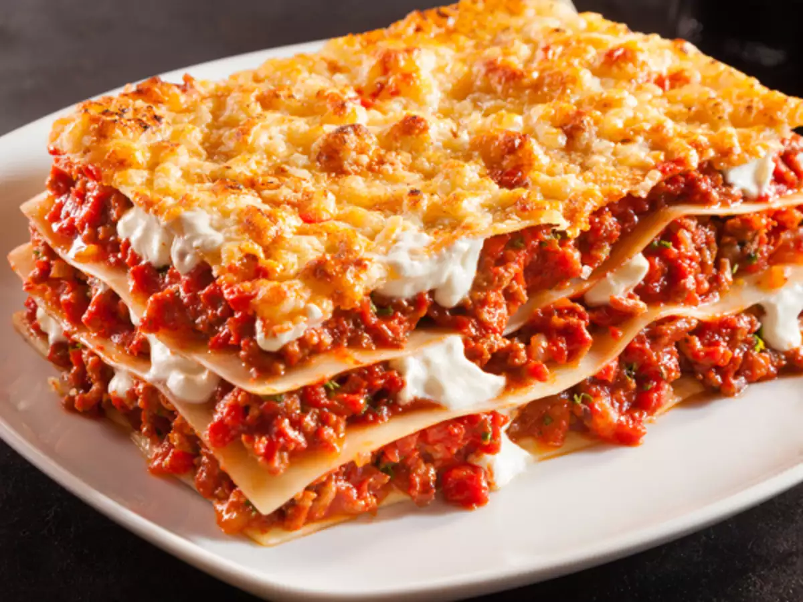

lasagna

Lasagna
Lasagna is a baked pasta dish of Italian origin consisting of layers of pasta alternating with layers of meat sauce, cheese, and sometimes vegetables.
The dish is typically made with sheets of dried lasagna pasta, which are layered with a tomato-based meat sauce, béchamel sauce, and grated Parmesan cheese.
Lasagna can be made with a variety of different meats, including ground beef, sausage, or chicken. It can also be made with a variety of different vegetables, such as spinach, mushrooms, or zucchini.
Lasagna is typically baked in a preheated oven at 350 degrees Fahrenheit for about 30 minutes, or until the cheese is melted and bubbly.
Lasagna is a hearty and delicious dish that is perfect for a family meal. It can be served hot or cold, and it can be made ahead of time and reheated.
Ingredients
- 1 pound dried lasagna noodles
- 1 pound ground beef
- 1 onion, chopped
- 2 cloves garlic, minced
- 1 (28 ounce) can crushed tomatoes
- 1 (15 ounce) can tomato sauce
- 1 (10 ounce) can tomato paste
- 1 teaspoon dried oregano
- 1 teaspoon dried basil
- 1 teaspoon salt
- 1/2 teaspoon black pepper
- 1 cup shredded mozzarella cheese
- 1/2 cup grated Parmesan cheese
Instructions
- Preheat oven to 350 degrees Fahrenheit.
- Brown ground beef in a large skillet over medium heat. Drain off any excess grease.
- Add onion and garlic to the skillet and cook until softened, about 5 minutes.
- Stir in crushed tomatoes, tomato sauce, tomato paste, oregano, basil, salt, and pepper. Bring to a simmer and cook for 10 minutes.
- Grease a 9x13 inch baking dish.
- Spread a thin layer of meat sauce in the bottom of the baking dish.
- Top with a layer of lasagna noodles.
- Spread with a layer of meat sauce.
- Top with a layer of mozzarella cheese.
- Repeat layers, ending with a layer of mozzarella cheese.
- Cover with foil and bake for 30 minutes.
- Remove foil and bake for an additional 10 minutes, or until cheese is melted and bubbly.
- Let stand for 10 minutes before serving.
Tips
- For a richer flavor, use a combination of ground beef and sausage.
- Add your favorite vegetables to the meat sauce, such as spinach, mushrooms, or zucchini.
- If you don't have time to make your own sauce, you can use a store-bought sauce.
- To make ahead, assemble the lasagna up to the point of baking. Cover and refrigerate for up to 24 hours. When ready to bake, remove from the refrigerator and let sit at room temperature for 30 minutes before baking.
- Lasagna is best served hot, but it can also be served cold.
Enjoy!